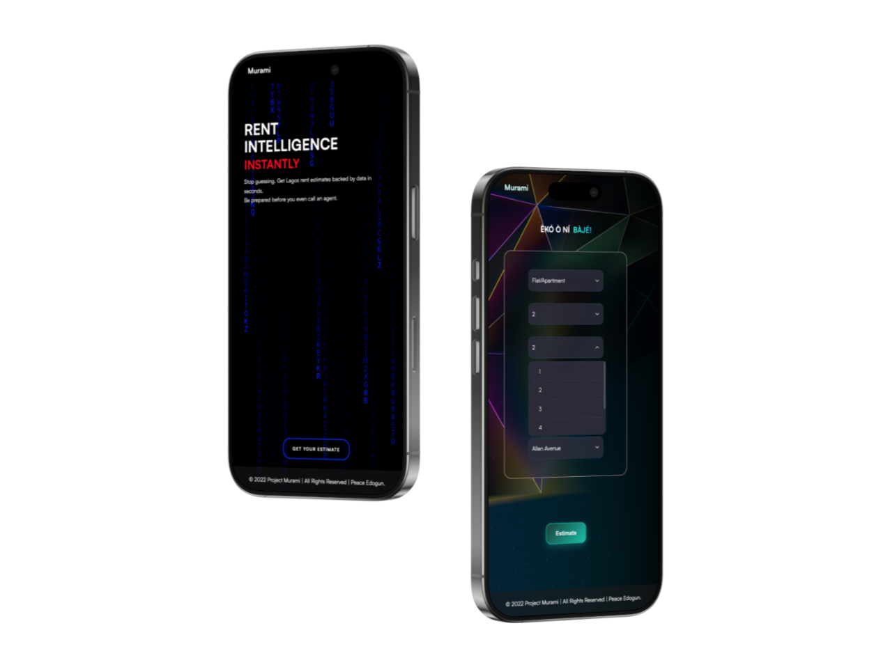

Murami – Rent Estimator
Overview: Developed a machine learning model predicting rent prices based on amenities, deployed as an interactive web app.
Impact: Enable renters to quickly obtain data-driven rent estimates, saving time and improving decision-making while promoting market transparency.
Project Case Study

Results & Impact
Prediction Accuracy / Reliability
Predicted rent values were within ±10% of actual historical rents across 200 test properties
Predicted rent values were within ±10% of actual historical rents across 200 test properties
User Efficiency / Time Saved
Users can estimate rent in under 30 seconds instead of manually researching multiple listings
Users can estimate rent in under 30 seconds instead of manually researching multiple listings